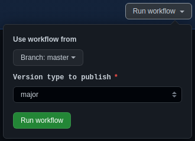
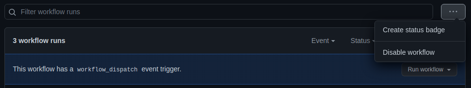
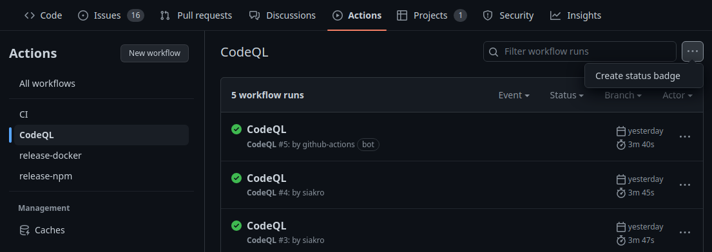

Flujos de trabajo
GitHub Actions es una plataforma proporcionada por GitHub con la que podemos automatizar tareas e implementar CI/CD. En esta lección, vamos a introducir los flujos de trabajo y cómo usarlos. Más adelante, veremos cómo usar estos flujos para automatizar los procesos de CI/CD.
Al finalizar, sabrá:
-
Qué es y cómo se define un flujo de trabajo.
-
Cómo definir flujos de trabajo ejecutables manualmente o periódicamente.
-
Qué son los contextos y cómo se usan.
-
Cómo utilizar expresiones para conseguir valores en tiempo de ejecución.
-
Cómo inhabilitar un flujo de trabajo.
-
Cómo añadir los distintivos de estado de los flujos de trabajo.
Introducción
Un flujo de trabajo (workflow) no es más que un proceso automatizado asociado a un repositorio de GitHub, ejecutable mediante GitHub Actions. Describe un proceso que realiza determinadas tareas de manera automática. Puede realizar tanto tareas de integración continua como de entrega o despliegue continuo, aunque, en cada caso, sus responsabilidades son claramente diferentes.
Este proceso se ejecutará automáticamente cada vez que se produzca alguno de los eventos que le hemos indicado. Por ejemplo, podemos configurar que se pueda ejecutar manualmente o cada vez que hagamos un push o cerremos una PR.
Estos flujos se redactan en su propio archivo YAML, dentro del directorio .github/workflows de la raíz del repositorio. Podemos tener tantos archivos de flujo de trabajo como sea necesario, cada uno con su propio objetivo. He aquí un ejemplo ilustrativo, de un flujo de trabajo que debe ejecutarse manualmente para realizar la publicación de unos paquetes en NPM:
name: Release
on:
workflow_dispatch:
inputs:
release:
description: Version type to publish
required: true
type: choice
options: [major, minor, patch]
env:
version: ${{ inputs.release }}
jobs:
publish:
name: Publish packages
runs-on: ${{ matrix.os }}
strategy:
matrix:
node: [18.x]
os: [ubuntu-latest]
steps:
- uses: actions/checkout@v3
- name: Node.js ${{ matrix.node }}
uses: actions/setup-node@v3
with:
node-version: ${{ matrix.node }}
registry-url: https://registry.npmjs.org
- name: Set Git metadata
run: |
git config --global user.name "${{ github.actor }}"
git config --global user.email "${{ github.actor }}@users.noreply.github.com"
- name: Install dependencies
run: npm ci && npm run bootstrap
- name: Set version to publish
run: npm run version -- --yes --no-push ${{ env.version }}
- name: Publish packages
env:
NODE_AUTH_TOKEN: ${{ secrets.NPM_TOKEN }}
run: npm run publish -- from-package --yes
- name: Push changes
run: git push --force
Propiedades de los flujos de trabajo
Los flujos de trabajo se definen como archivos YAML, en vez de con algún lenguaje de programación particular. Estos archivos contienen varias propiedades con los que describimos o definimos el flujo de trabajo.
Propiedades name y run-name del flujo de trabajo
Mediante la propiedad name, fijamos el nombre del flujo de trabajo que mostrará GitHub Actions en los informes cada vez que lo ejecute. Su identificador es el del archivo que lo define. En el ejemplo anterior, el archivo se ha nombrado como release.yaml que es distinto al nombre que tiene, Release.
El valor de la propiedad name es estático, no se puede cambiar en cada ejecución del flujo de trabajo, siempre será el mismo. Si necesitamos personalizar el nombre, debemos usar run-name, que puede contener expresiones de GitHub Actions como, por ejemplo:
run-name: Continuous integration run by @${{ github.actor }}
Propiedad on del flujo de trabajo
La propiedad on establece cuándo debe ejecutarse el flujo, o sea, bajo qué eventos. Más adelante, presentaremos los eventos más detenidamente. Por ahora, debe saber que su valor puede ser:
-
Un texto, el cual indicará el nombre de un único evento encargado de generar la ejecución automática del flujo de trabajo como, por ejemplo:
on: push -
Un array de textos, en este caso, indicará distintos eventos. Ejemplos:
on: [push, pull_request] -
Un objeto, donde cada propiedad representa un evento disparador y contiene su configuración particular:
on: push: branches: - "**" pull_request: branches: - master
El valor dependerá de los eventos disparadores y de sus configuraciones. Si ninguno tiene configuración asociada, entonces, puede usar el texto o el array de textos. En otro caso, tendrá que utilizar un objeto como valor.
Sólo los eventos configurados en la propiedad on podrán disparar la ejecución del flujo de trabajo.
Propiedad jobs del flujo de trabajo
La propiedad jobs contiene los trabajos que deben ejecutarse cada vez que se invoque el flujo. De manera predeterminada, los trabajos se ejecutan en paralelo, aunque en ocasiones podremos desear que se ejecuten de manera secuencial, al menos, algunos de ellos.
Esta propiedad es un objeto donde cada una de sus propiedades define un trabajo en particular. El identificador del trabajo será el de la propiedad y su valor, de tipo objeto, contendrá su definición.
Contextos
Antes de pasar a abordar los componentes principales de un flujo de trabajo más detenidamente, vamos a introducir los contextos.
Un contexto (context) es un conjunto de datos relacionados con alguna cosa que podemos acceder en los flujos de trabajo mediante expresiones.
Más adelante presentaremos las expresiones, por ahora, simplemente recuerde que las expresiones en GitHub Actions se delimitan por ${{ y }} como, por ejemplo, ${{ matrix.node }}.
En las expresiones, los contextos se representan mediante objetos, como los de JavaScript, cuyas propiedades contienen los valores específicos de ese contexto. A lo largo de esta lección, presentaremos los contextos más utilizados o, por lo menos, los más importantes cuando comenzamos a trabajar con GitHub Actions. Recuerde que un contexto no es más que un conjunto de datos relacionados con alguna cosa que pone a nuestra disposición GitHub Actions. Entre otros contextos, encontramos: env, github, inputs, matrix, runner y secrets.
Eventos
GitHub Actions es una plataforma conducida por eventos (event-driven platform). Esto quiere decir que la ejecución de los flujos de trabajo se dispara automáticamente cuando se generan los eventos indicados en el propio flujo de trabajo. Un evento (event) no es más que un suceso que se produce en la plataforma, en este caso, de GitHub como, por ejemplo, uno que represente que se ha producido un push o que se ha cerrado una PR. Cada flujo de trabajo debe indicar, mediante su propiedad on, los eventos que generarán o provocarán su ejecución. Cada propiedad de on representa un determinado evento o tipo de evento y podemos indicar tantos como necesitemos.
Atendiendo a si el evento se produce dentro de la plataforma de GitHub o fuera, se clasifican en internos o externos. Un evento interno (internal event) es aquel que se produce dentro de la plataforma de GitHub como, por ejemplo, una confirmación (commit), una solicitud de integración (pull request), etc. Se producen dentro de la plataforma y provocan la ejecución de aquellos flujos de trabajo que los tienen asociados. En cambio, un evento externo (external event) es aquel que se produce fuera de GitHub y debemos notificar mediante la API de GitHub. Esto proporciona mayor flexibilidad porque no se limita a sólo aquello que se produce en GitHub.
Los eventos internos, a su vez, se clasifican en:
-
Eventos planificados (scheduled events), aquellos que se ejecutan en momentos determinados como, por ejemplo, periódicamente o a intervalos.
-
Eventos manuales (manual events), los que ejecutamos manualmente. No existe un evento particular, sino que somos nosotros los que solicitamos su ejecución explícitamente.
-
Eventos webhooks (webhook events), aquellos que se producen cuando un determinado evento de la plataforma GitHub se produce.
Debido a los objetivos de esta lección, vamos a considerar únicamente los eventos manuales y planificados; el resto los veremos en lecciones posteriores cuando sea necesario. Aunque algunos de ellos ya los hemos visto en lecciones anteriores como, por ejemplo, los relacionados con GitHub Projects o GitHub Issues.
Eventos manuales
Un evento manual (manual event) es aquel que permite la ejecución manual del flujo de trabajo y se representa mediante el evento workflow_dispatch.
Evento manual workflow_dispatch
El evento workflow_dispatch lo usaremos cuando deseemos pedir la ejecución del flujo de trabajo desde la web de GitHub o desde la línea de comandos mediante gh. Sólo se puede usar si el flujo de trabajo lo definimos en la rama predeterminada. Recordemos que la rama predeterminada (default branch) es la principal del repositorio, aquella que se muestra automáticamente cuando visitamos el repositorio mediante la web; suele ser master o main.
Este tipo de evento contiene parámetros a través de los cuales pasar datos al flujo específicos de esa ejecución, conocidos formalmente como entradas (inputs). Cada vez que solicitemos la ejecución manual mediante este evento, tendremos que pasar los valores de estas entradas.
Las entradas se definen en la propiedad inputs del evento. Esta propiedad de tipo objeto contiene, a su vez, una propiedad para cada entrada. El nombre de la entrada será el nombre de la propiedad; y su valor se indicará con otro objeto que puede presentar las siguientes propiedades:
| Propiedad | Tipo de datos | Descripción |
|---|---|---|
| description | Texto | Breve descripción del objeto de la entrada. |
| required | Booleano | ¿Hay que proporcionar un valor sí o sí? |
| default | Cualquiera | Valor predeterminado en caso de que no se proporcione. |
| type | Texto | Tipo de datos del valor: boolean, number, string o choice. |
| options | Array | Lista de posibles valores si type es choice. |
Para restringir los posibles valores aceptables, se puede utilizar las propiedades type, que deberá ser siempre choice, y options que listará los valores aceptables.
Ejemplo:
on:
workflow_dispatch:
inputs:
version:
description: Número de versión a publicar.
required: true
release:
description: Tipo de versión a publicar.
required: false
type: choice
options: [alpha, beta, rc]
Para ejecutar un flujo de trabajo manualmente, podemos ir a la pestaña Actions del repositorio, seleccionar el flujo de trabajo, hacer clic en Run workflow, rellenar los valores a pasar a las entradas y, finalmente, hacer clic en Run workflow:

Contexto inputs
Para acceder dentro del flujo de trabajo al valor de una entrada, podemos usar el contexto inputs. Para cada entrada dispondrá de una propiedad cuyo valor será el valor proporcionado por el usuario o fijado a través de su valor predeterminado, según sea el caso. Ejemplo de acceso a una entrada:
${{ inputs.version }}
Eventos planificados
Un evento planificado (scheduled event) es aquel que se ejecuta periódicamente, en momentos concretos o a intervalos regulares. Es posible indicar este tipo de eventos para que provoquen la ejecución de los flujos de trabajo de manera temporal.
Para indicar un evento planificado, hay que usar la propiedad schedule, cuyo valor debe ser un array de objetos, cada uno de los cuales representa un momento en el que debe generarse y, por lo tanto, ejecutarse el flujo de trabajo. Cada elemento de este array debe contener una propiedad cron, la cual indica cuándo debe generarse el evento. Esta propiedad sigue la sintaxis cron POSIX (POSIX cron syntax) que describe de manera muy sencilla los momentos en los que se generará el evento:
minuto hora díaDelMes mes díaDeLaSemana
Comencemos con un ejemplo ilustrativo y, a continuación, abordaremos más detenidamente esta sintaxis:
on:
schedule:
- cron: 30 5 * * 1,3
- cron: 30 5 * * 2,4
La expresión debe contener cinco secciones:
-
Minuto(s) de ejecución (minute(s)). En qué minuto(s) debe ejecutarse, entre 0 y 59.
-
Hora(s) de ejecución (hour(s)). En qué hora(s) del día debe ejecutarse, entre 0 y 23.
-
Día(s) del mes (day(s) of the month). Día(s) del mes en los que debe generarse, entre 1 y 31.
-
Mes(es) (month(s)). Mes(es) del año en los que debe generarse, entre 1 y 12. Si prefiere, puede indicar la abreviación del mes en inglés: JAN, FEB, MAR, APR, MAY, JUN, JUL, AUG, SEP, OCT, NOV o DEC.
-
Día(s) de la semana (day(s) of the week). Día(s) de la semana en que debe generarse, entre 0 y 6, considerando el cero como domingo. También se puede indicar la abreviatura del día de la semana en inglés como, por ejemplo, SUN, MON, TUE, WED, THU, FRI o SAT.
En cualquier sección, podemos indicar un valor numérico concreto o varios.
En caso de fijar varios, usaremos la coma (,) como separador.
También es posible indicar un asterisco (*) como valor, en vez de valores numéricos.
En este caso, lo que se está indicando es cada posible valor de la sección.
Así, por ejemplo, en el caso de la sección relacionada con la hora en la que se debe generar indicaría cada hora.
Otra posibilidad es usar rangos, mediante el signo ortográfico guion (-).
Vamos a mostrar algunos ejemplos:
| Expresión | Descripción |
|---|---|
| * * * * * | En cada minuto. |
| 0 5 * * * | Todos los días del año a las 05:00. |
| 5 6,18 * * * | Todos los días del año a las 06:05 y 18:05. |
| 0 0 * JAN MON | Los lunes de enero a las 00:00. |
| 0 12 1 * * | El primer día de cada mes a las 12:00. |
Trabajos
Un trabajo (job) representa una secuencia de operaciones a realizar dentro de un determinado entorno de trabajo. Cada flujo de trabajo define los suyos mediante su propiedad jobs. Esta propiedad de tipo objeto contiene, a su vez, una o más propiedades, donde cada propiedad define un trabajo.
Los trabajos disponen de varias propiedades, las cuales vamos a describir a continuación. Pero primero, un ejemplo ilustrativo que nos ayude a visualizar lo que nos espera a continuación:
jobs:
runTests:
name: Node.js ${{ matrix.node }} on ${{ matrix.os }}
runs-on: ${{ matrix.os }}
strategy:
matrix:
node: [16.x, 18.x]
os: [ubuntu-latest, windows-latest]
steps:
- uses: actions/checkout@v3
- name: Node.js ${{ matrix.node }}
uses: actions/setup-node@v3
with:
node-version: ${{ matrix.node }}
- name: Install dependencies
run: npm ci && npm run bootstrap
- name: Run tests
run: npm run cov
Propiedad name de un trabajo
El identificador del trabajo es el nombre de la propiedad dentro del objeto jobs. Pero si deseamos pedir que se muestre un título más formal, podemos indicarlo en la propiedad name del trabajo, de manera similar a la homónima del flujo de trabajo.
Propiedad runs-on de un trabajo
Cada trabajo se ejecuta aisladamente del resto dentro de su propia máquina virtual o contenedor. Esto quiere decir que si definimos dos trabajos, estos se ejecutarán en dos máquinas o contenedores distintos, sin nada que ver el uno con el otro. De ahí que los trabajos de un flujo se puedan ejecutar paralelamente, a menos que especifiquemos explícitamente que se deben ejecutar de manera secuencial.
Mediante la propiedad runs-on indicamos dónde se debe ejecutar el trabajo. Al componente que ejecuta el trabajo se le conoce formalmente como ejecutor (runner), no es más que un componente que contiene una aplicación instalada que se encarga de ejecutar los pasos del trabajo. Por lo general, aunque no siempre, usaremos ejecutores alojados en GitHub (GitHub-hosted runners), es lo recomendado por GitHub Actions. Un ejecutor de este tipo consiste en una determinada máquina virtual alojada en GitHub, la cual se creará automáticamente para ejecutar el trabajo. Actualmente, podemos usar Linux, Windows o macOS. Hay que indicar concretamente el sistema operativo a utilizar. Algunos posibles valores son ubuntu-latest, ubuntu-20.04, windows-latest, windows-2022, macos-latest o macos-12. Hay más, si necesita otra versión de alguno de estos sistemas operativos, consulte la documentación oficial.
Así pues, si deseamos indicar que el trabajo se ejecute en una máquina bajo Linux, lo más habitual será utilizar:
runs-on: ubuntu-latest
Contexto runner
El contexto runner (runner context) proporciona datos específicos del ejecutor. Sus propiedades más importantes son:
| Propiedad | Descripción |
|---|---|
| os | Sistema operativo en el que se está ejecutando el trabajo: Linux, Windows o macOS. |
| arch | Arquitectura de la máquina virtual: X86, X64, ARM o ARM64. |
| temp | Ruta al directorio temporal. |
Propiedad strategy de un trabajo
En algunas ocasiones, necesitamos que un determinado trabajo se ejecute en varios sistemas operativos bajo varias versiones. Por ejemplo, suponga que deseamos comprobar que las pruebas de unidad pasan tanto en Linux como en Windows, bajo una o varias versiones de Node.js. Esto se puede configurar de manera muy sencilla mediante una estrategia matriz (matrix strategy). Esta estrategia lo que hace es decirle a GitHub Actions que cree varias máquinas con configuraciones específicas y que en cada una ejecute el trabajo.
Vamos a ver un ejemplo ilustrativo. Supongamos que acabamos de desarrollar un paquete de Node.js bajo su versión 16. Deseamos que este paquete funcione tanto bajo esta versión 16 como la 18. Además de querer que funcione tanto en Linux como en Windows. La matriz a utilizar será algo tan sencillo como lo siguiente:
strategy:
matrix:
node: [16.x, 18.x]
os: [ubuntu-latest, windows-latest]
Cuando GitHub Actions detecte que nuestro trabajo tiene una estrategia matriz, combinará los valores de todas las variables indicadas, en nuestro caso, node y os, pero puede definir aquellas que quiera con el nombre que quiera. Así pues, para nuestro caso, se crearán las siguientes combinaciones:
| node | os |
|---|---|
| 16.x | ubuntu-latest |
| 18.x | ubuntu-latest |
| 16.x | windows-latest |
| 18.x | windows-latest |
Con estas combinaciones, ahora tendremos que utilizar el contexto matrix para acceder a cada valor en particular.
Por lo tanto, si tenemos runs-on: ${{ matrix.os }}, para cada combinación estará usando el valor en cuestión de la variable os definida en strategy.matrix.
Si por otra parte, tal y como veremos más adelante en uno de los pasos del trabajo, tenemos algo como lo siguiente:
steps:
- name: Node.js ${{ matrix.node }}
uses: actions/setup-node@v3
with:
node-version: ${{ matrix.node }}
Lo que estamos haciendo es configurar Node.js a la versión específica de la variable node definida en strategy.matrix.
Tenga en cuenta que la estrategia no fija las máquinas ni las versiones de las acciones que se deben usar, lo que hace es crear una máquina para cada combinación. Si el trabajo tiene un runs-on específico, usará la máquina ahí indicada para todas las combinaciones. Pero si desea que la máquina venga dada por una variable de la estrategia matriz, pues no tiene más que usar el contexto matrix.nombreVariable, tal y como hemos visto en el ejemplo anterior.
La estrategia matriz proporciona una herramienta muy poderosa para determinar distintos entornos y versiones con los que trabajar.
Contexto matrix
GitHub Actions proporciona el contexto matrix, tal y como acabamos de ver, para acceder a los valores de las variables definidas en strategy.matrix. En cada trabajo, los valores serán los de una combinación realizada por GitHub Actions.
Propiedad exclude de strategy.matrix
En ocasiones, puede ser necesario omitir una determinada combinación de entre todas las generadas. Esto se puede conseguir muy fácilmente indicándolas mediante la propiedad exclude de strategy.matrix. Esta propiedad de tipo lista contiene un elemento para cada combinación a no tener en cuenta. A continuación, un ejemplo extraído de la documentación oficial de GitHub Actions que excluye dos de las posibles combinaciones:
strategy:
matrix:
os: [macos-latest, windows-latest]
version: [12, 14, 16]
environment: [staging, production]
exclude:
- os: macos-latest
version: 12
environment: production
- os: windows-latest
version: 16
Observe que la matriz es tridimensional, pero no hace falta que las exclusiones indiquen las tres dimensiones. Si indicamos menos, se descartarán todas aquellas que contengan las dimensiones cuyos valores son los indicados.
Propiedad if de un trabajo
Un trabajo condicional (conditional job) es aquel que se ejecuta sólo si se cumple una determinada condición. De manera predeterminada, si no indicamos ninguna condición, se ejecutan siempre. Para convertirlos en condicionales, debemos indicar una propiedad if, la cual contendrá la expresión que deseamos se evalúe y cuyo valor resultado determinará si se debe ejecutar o no. Por ejemplo, si deseamos indicar que un determinado trabajo sólo debe ejecutarse si estamos bajo Linux, podemos indicarlo como sigue:
if: runner.os == 'Linux'
A continuación, otro ejemplo que indica que el trabajo sólo debe ejecutarse si el mensaje de confirmación no contiene el texto ci skip:
if: "!contains(github.event.commits[0].message, 'ci skip')"
Propiedad steps de un trabajo
Los trabajos realizan operaciones o acciones, cada una de las cuales se indica como un paso. Esta propiedad es de tipo array y cada uno de sus elementos declara un paso. Los pasos de un trabajo se ejecutan secuencialmente, uno detrás de otro.
Pasos
Un paso (step) representa una acción a ejecutar en un trabajo. Una acción (action) representa una operación reutilizable. GitHub Actions proporciona un marketplace, https://github.com/marketplace?type=actions, en el que podemos encontrar las acciones disponibles que podemos usar.
Cada paso debe indicar la acción que debe ejecutarse. A guisa de ejemplo y para ir abriendo boca, he aquí un paso ilustrativo que solicita la instalación de Node.js, concretamente la versión indicada por la variable node:
- name: Node.js ${{ env.node }}
uses: actions/setup-node@v3
with:
node-version: ${{ env.node }}
La propiedad uses indica la acción en cuestión, en nuestro caso, la versión 3 de actions/setup-node. La propiedad opcional name la podemos usar para indicar un título personalizado de cara al informe de ejecución. Finalmente, la propiedad with contiene argumentos específicos de la acción. En este caso, mediante su propiedad node-version indicaremos la versión de Node.js a utilizar. Lo habitual es indicar la versión mediante una expresión. En nuestro caso, hemos usado el contexto env, que presentaremos más adelante en el libro, pero también se puede usar cualquier otro como, por ejemplo, matrix, tal y como hemos visto anteriormente.
A continuación, otro ejemplo de acción muy habitual:
- uses: actions/checkout@v3
La acción actions/checkout realiza una clonación del repositorio para así poder usarlo en el trabajo. Se suele indicar como el primer paso de la mayoría de trabajos.
Versiones de las acciones
Cuando se indica una acción en un paso, hay que indicar también la versión que deseamos utilizar.
Esto se indica finalizando el nombre de la acción con una arroba (@) y la versión como, por ejemplo:
actions/checkout@v3
El objeto de especificar siempre la versión de la acción es que si se publica una nueva versión que rompe con la interfaz, esa rotura no nos afecte a nosotros y, así, no tengamos problemas. Cuando queramos usar esa nueva versión, haremos las pruebas pertinentes y actualizaremos a la nueva.
Restricción de acciones utilizables
Es posible restringir las acciones utilizables en los flujos de trabajo, por ejemplo, para que sólo se puedan usar las desarrolladas por GitHub o por nosotros mismos. Para ello, hay que ir a la configuración general del repositorio, recuerde, ubicada en su pestaña Settings. Y en la sección Actions permissions bajo General > Code and automation > Actions > General, seleccionar cualquiera de las siguientes opciones:
-
Allow all actions and reusable workflows. Permite utilizar cualquier acción, además de reutilizar cualquier flujo de trabajo propio o público.
-
Allow <propietario> actions and reusable workflows. Esta opción sólo permite utilizar acciones propias, además de reutilizar flujos de trabajo propios.
-
Allow <propietario>, and select non-<propietario>, actions and reusable workflows. Si seleccionamos esta opción, se despliega una lista de opciones extras que permite configurar más detenidamente las acciones. Por ejemplo, con Allow actions created by GitHub restringiremos las acciones a aquellas desarrolladas por GitHub; con Allow actions by Marketplace verified creators, a aquellas desarrolladas por creadores verificados; y con Allow specified actions and reusable workflows podemos indicar aquellas acciones y flujos de trabajo reutilizables que podemos usar.
Esta opción siempre permite el uso de nuestras acciones y flujos de trabajo reutilizables.
Paso run
Existe un paso especial conocido como run con el que podemos ejecutar un comando mediante shell. Este paso no usa la propiedad uses, sino run, la cual contiene el comando o los comandos a ejecutar. Ejemplo:
- name: Instala dependencias
run: npm ci && npm run bootstrap
Para indicar el shell a utilizar, podemos hacerlo mediante la propiedad shell: bash; sh; cmd; powershell; entre otros. Es posible indicar un shell con parámetros, sobre todo si vamos a ejecutar el flujo de trabajo en varios sistemas operativos. En este caso, se suele utilizar la propiedad defaults.run.shell del flujo de trabajo para fijarlo de cara a todos los pasos run. He aquí un ejemplo:
defaults:
run:
shell: bash -e {0}
{0} representa lo indicado en el paso run. Más concretamente, la ruta al script creado automáticamente por GitHub Actions para ejecutar el contenido de run. Si establece la propiedad shell con parámetros, no olvide indicar {0}.
Expresiones
Una expresión (expression) es una proposición formada por operadores y operandos que se evalúa para que devuelva un determinado valor resultado, de manera similar a cualquier lenguaje de programación.
En GitHub Actions, podemos usar las expresiones para determinar dinámicamente valores de propiedades, ya sean del flujo de trabajo, de un trabajo o de un paso.
Para que GitHub Actions sepa que se encuentra ante una expresión, debe delimitarse por ${{ y }} como, por ejemplo:
${{ matrix.node }}
Las expresiones indicadas en la propiedad if no hace falta delimitarlas, porque se asume que su valor es siempre una expresión, pero si lo hace no tendrá problemas. Pero en el resto de propiedades, tenemos que delimitarlas sí o sí. Y podemos indicarlas como el valor final de una propiedad o como una parte de un valor textual de una propiedad. Esto se ve mejor con un ejemplo:
- name: Node.js ${{ env.node }} # parte del valor de la propiedad
uses: actions/setup-node@v3
with:
node-version: ${{ env.node }} # valor de la propiedad
Las expresiones están formadas por operadores y operandos. Un operador (operator) es un símbolo que denota una operación a realizar con uno o dos operandos. Donde un operando (operand) representa un valor con el que operar.
Como operandos podemos utilizar valores literales booleanos (true o false), números (123 o 123.45), textos (‘hola mundo!’) o el valor nulo (null). También pueden hacer referencia a objetos de tipo contexto como env.HOME o matrix.node.
Entre los operadores disponibles, tenemos, con un parecido muy similar a sus homólogos de JavaScript:
| Operador | Descripción |
|---|---|
() |
Para agrupar una expresión. |
[] |
Para indexar. |
. |
Para acceder a un campo o propiedad de un objeto. |
! |
Operador lógico de negación. |
&& |
Operador lógico AND. |
\|\| |
Operador lógico OR. |
== |
Operador de igualdad. |
!= |
Operador de desigualdad. |
< |
Operador menor que. |
<= |
Operador menor o igual que. |
> |
Operador mayor que. |
>= |
Operador mayor o igual que. |
Las expresiones de GitHub Actions también permiten la invocación de funciones predefinidas. Entre otras, encontramos:
| Función | Descripción |
|---|---|
| contains(texto, subtexto) | Comprueba si un texto contiene otro. |
| contains(lista, ítem) | Comprueba si una lista contiene un determinado ítem. |
| startsWith(texto, prefijo) | Comprueba si un texto comienza por un prefijo dado. |
| endsWith(texto, sufijo) | Comprueba si un texto finaliza en un sufijo dado. |
| format(patrón, …valores) | Formatea un patrón con los valores indicados. Cada valor se indica en el patrón con {índice}, comenzando con el índice cero. Ejemplo: format(‘{0} {1} {0} {2}’, ‘cero’, ‘uno’, ‘dos’). Para escapar las llaves en el patrón, tenemos que duplicarlas ({{ o }}). |
| join(lista) | Concatena los valores de la lista usando el separador predeterminado. |
| join(lista, separador) | Concatena los valores de la lista usando el separador indicado. |
| toJSON(valor) | Convierte el valor indicado a un texto en formato JSON. |
| fromJSON(texto) | Analiza y devuelve el valor representado en formato JSON. |
| success() | Devuelve true si ninguno de los pasos previos ha fallado o ha sido cancelado. |
| failure() | Devuelve true si el paso previo ha fallado. |
| always() | Devuelve siempre true. |
| cancelled() | Devuelve true si el flujo de trabajo ha sido cancelado. |
Las funciones success(), always() y failure() se utilizan mucho en la propiedad if de los pasos.
Por ejemplo, si usamos if: always(), el paso se ejecutará siempre, independientemente de cómo hayan acabado los anteriores.
En cambio, si indicamos if: success(), sólo si el paso previo finalizó bien.
Por su parte, if: failure() indica que sólo debe ejecutarse si el paso previo finalizó en error.
Tenga en cuenta que si un paso falla, por la razón que sea, acabará el trabajo, a menos que los pasos que le siguen definan la propiedad if que haga que se ejecuten.
Filtros de objeto
Algunas funciones pueden indicar como primer argumento un filtro de objeto (object filter), una expresión que selecciona una determinada propiedad de los elementos de una lista. Ya no se pasa la lista como argumento, sino una expresión de filtro de objeto. Veamos un ejemplo:
github.event.issue.labels.*.name
Observe que la lista puede incluso contener comodines como el asterisco (*).
La función contains() permite el uso de este filtro.
Contexto github
El contexto github (github context) contiene información sobre el flujo de trabajo y el evento que generó su ejecución. Entre sus propiedades más utilizadas, encontramos:
| Propiedad | Descripción |
|---|---|
| workflow | Nombre del flujo de trabajo. |
| actor | Nombre del usuario que disparó la ejecución del flujo de trabajo. |
| event_name | Nombre del evento que generó la ejecución. |
| base_ref | Rama de Git en la que se está ejecutando el flujo de trabajo. |
| ref_type | Tipo de referencia: branch o tag. |
| ref_name | Rama o etiqueta que generó la ejecución del flujo de trabajo. Depende del tipo de evento. |
| repository | Nombre del repositorio. |
| repository_owner | Nombre del propietario del repositorio. |
| run_id | Identificador de la ejecución del flujo de trabajo. |
| token | Token similar a GITHUB_TOKEN. |
| sha | SHA de la confirmación (commit) que ha disparado la ejecución del flujo. |
Inhabilitación de flujos de trabajo
Podemos desactivar un flujo de trabajo temporalmente para que no reaccione a los eventos que tiene asociados y, así, no se ejecute.
Esto lo podemos hacer en la pestaña Actions, seleccionando el flujo de trabajo y, a continuación, seleccionando Disable workflow del menú desplegable mostrado cuando se hace clic en el botón de tres puntos (...):

También es posible hacerlo mediante el comando gh workflow disable.
Distintivo del estado del flujo de trabajo
El distintivo de estado del flujo de trabajo (workflow status badge) es un icono gráfico que indica el estado de la última ejecución del flujo de trabajo. Podemos obtenerlo mediante la siguiente URL:
https://github.com/propietario/repositorio/actions/workflows/archivo/badge.svg
Adicionalmente, podemos indicar las propiedades siguientes:
| Propiedad | Descripción |
|---|---|
| branch | Rama del flujo. |
| event | Evento del que extraer el estado como, por ejemplo, push, pull_request, etc. |
Ejemplo:
https://github.com/akromio/doubles/actions/workflows/ci.yaml/badge.svg
El icono contiene el nombre del flujo de trabajo, no el nombre del archivo, seguido del estado:
Puede obtener el distintivo fácilmente como sigue:
-
Ir al repositorio del flujo de trabajo.
-
Ir a la pestaña Actions.
-
Seleccionar el flujo de trabajo en cuestión.
-
Hacer clic en los tres puntos (
...) y, a continuación, en Create status badge: